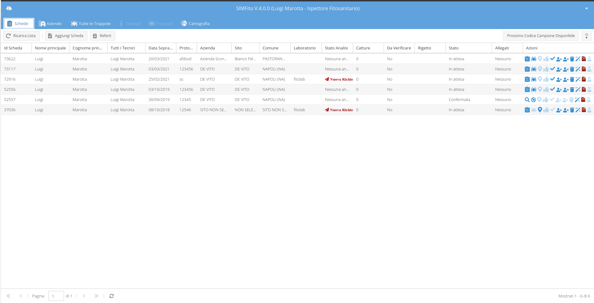
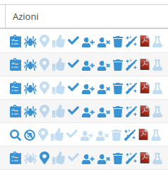
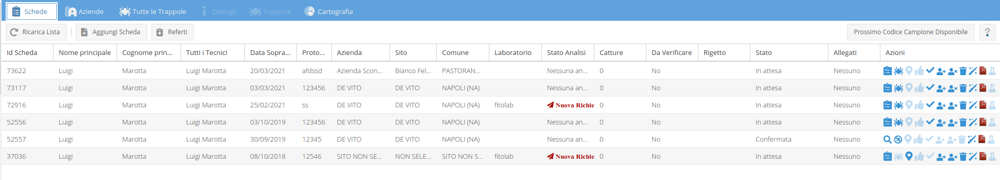
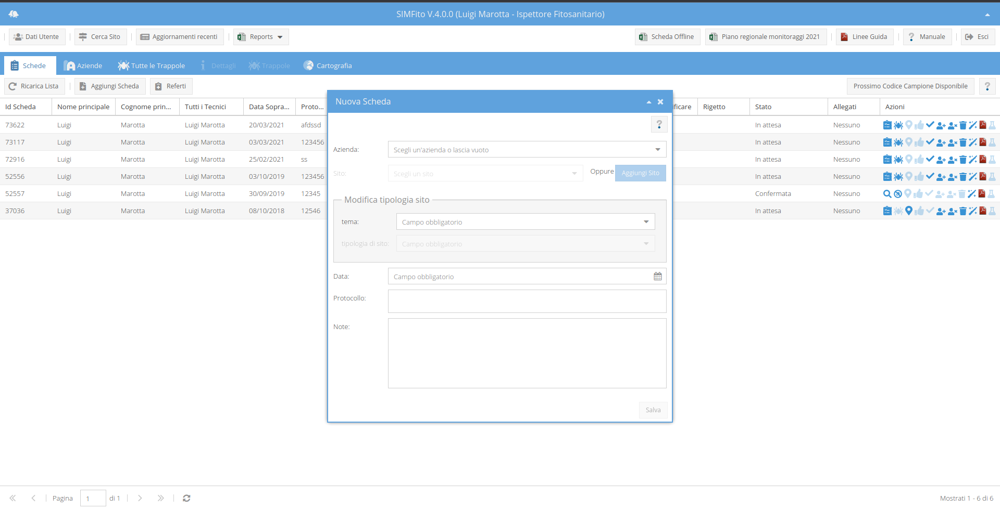
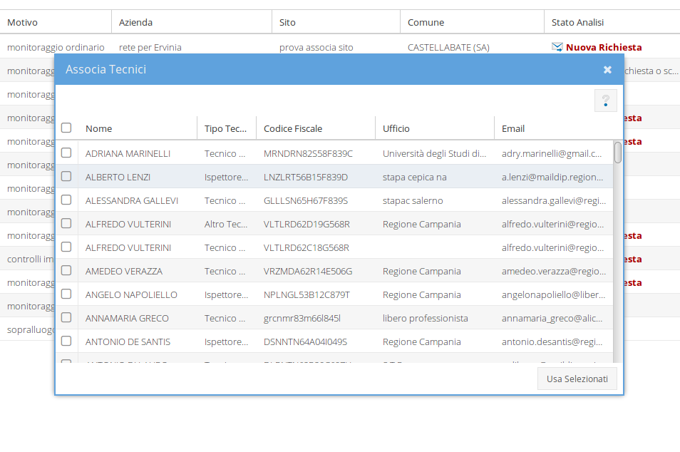

La scheda è la raccolta di informazioni che afferiscono ad uno specifico monitoraggio. Essa contiene tutte le osservazioni effettuate in un dato sito in una certa data.
L'elenco delle schede fatte (o di compentenza), dell'ispettore sono riportate nel tab "Schede". Quest'elenco contiene le principali informazioni di ogni scheda ed una serie di pulsanti che consentono di eseguire, su di esse, una serie di operazioni come: la visualizzazione; l'eliminazione; la duplicazione; la chiusura; etc..

Le informazioni riportate, nella tabella delle schede sono:
L'ultima colonna contiene le operazioni che possono essere fatte sulla singola riga della tabella. Queste operazioni vengono eseguite cliccando sull'icona corrispondente. Al passaggio del mouse sull'icona un tooltip ne indica la funzione.
Le icone sono abilitate o meno a secondo dello stato della scheda e dei permessi dell' utente. Ad esempio: se la scheda è stata confermata, l'azione relativa all'eliminazione della scheda sarà disabilitata; se la scheda è stata associata al tecnico che vede l'elenco e non creata da esso, l'azione di conferma sarà disabilitata. Le icone reltive ad azioni disabilitate hanno una trasparenza maggiore quindi sono meno marcate di quelle relative ad azioni abilitate.

Le azioni possibili sono (da sinistra a destra):
Nella parte superiore dell'elenco delle schede è presente una barra con alcuni tasti.

La toolbar contiene tre tasti: due contestuali alla tabelle ed uno ausiliario. I tasti consentono, rispettivamente, di:
La struttura a tab di quest'applicazione è stata pensata per consentire all'utente di passare da una sezione all'altra senza modificarne lo stato. Il vantaggio di questa struttura stà nel fatto che è possibile passare rapidamente dalla visualizzazione di una serie di informazioni all'altra potendo mantenere tutte le sezioni in editazione contemporaneamente; lo svantaggio stà nel fatto che in alcuni casi diventa necessario aggiornarne manualmente lo stato. Ad esempio se ho apportato delle modifiche ad una scheda in compilazione e voglio rivederle anche, laddove possibile, nell'elenco delle scede, allora devo aggiornare l'elenco stesso. Ecco la necessità, del tasto Aggiorna.
Il bottone Aggiungi Scheda fa comparire una form nel quale viene richiesto di indicare le informazioni che definiscono la scheda stessa.

I dati richiesti dal form sono:
Nel caso in cui il sito non fosse presente nel menu a tendina si può decidere di passare direttamente alla sua creazione attraverso il pulsante Aggiungi Sito del form oppure decidere di crearlo successivamente utilizzando l'icona Collega a Sito nella colonna delle azioni.
Cliccando sul tasto Salva, quindi, il form si chiude ed una nuova riga compare nella liste delle schede. Sarà possibile inserire le osservazioni nella nuova scheda utilizzando l'apposita icona nella colonna delle azioni.
È possibile associare uno o più tecnici alle proprie schede. I tecnici associati potranno:
Cliccando sull'icona associa tecnico, apparira una finestra con la lista dei tecnici. Utilizando i checkbox e premendo il tasto Usa Selezionati si potranno associare i tecnici alla scheda selezionata. La procedura di disassociazione del tecnico è identica ma nell'elenco compariranno solo i tecnici associati.
